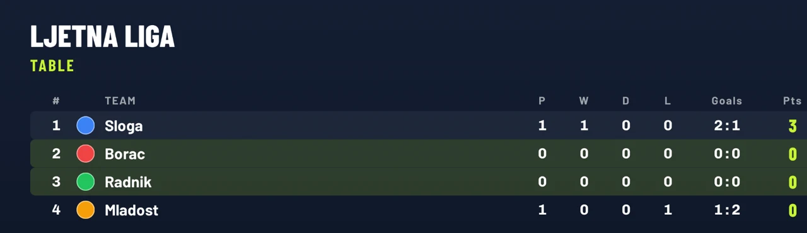

Liga ili turnir iz telefona: raspored, tabela i kostur kupa
· Kadar

Svakog ljeta neko u klubu dobije zadatak da vodi turnir: osam ekipa, jedan teren, list papira na vratima klupskih prostorija i hemijska koja je nestala. Do polufinala niko nije siguran ko s kim igra. Telefon taj posao radi bolje od papira.
Odaberite format koji odgovara danu
- Liga: svako igra sa svakim, jednom ili dvaput. Pravedno, ali traži vremena: šest ekipa u jednom krugu znači petnaest utakmica.
- Kup na ispadanje: ko izgubi, ispada. Brzo je i svaka utakmica je važna, ali pola ekipa ide kući nakon jedne utakmice.
- Grupe pa ispadanje: uobičajen izbor za jednodnevni turnir. Svi odigraju bar dvije ili tri utakmice, a dan se ipak završi finalom.
Neka se raspored napravi sam
U aplikaciji Kadar upišete ekipe, odaberete jedan od tri formata i raspored je gotov: kola za ligu, kostur za kup, slobodni prolazi kad je broj ekipa neparan. Svakoj utakmici dodate vrijeme i teren.


Držite tabelu tačnom
Rasprave počinju oko tabele. Svaki rezultat unesete jednom i tabela se preračuna: tri boda za pobjedu, jedan za neriješeno, zatim gol-razlika, postignuti golovi i međusobni susret. U kupu pobjednik sam prelazi u sljedeće kolo, a neriješen rezultat traži ishod izvođenja penala.
Pokažite je svima
Roditelji uz aut-liniju i igrači koji čekaju svoju utakmicu cijeli dan pitaju isto: ko je sljedeći i gdje smo na tabeli?
- Poslije svakog kola podijelite tabelu ili kostur kupa kao sliku u grupu turnira.
- Ako utakmicu prenosite iz rasporeda, ekipe i kolo su već upisani, a rezultat ulazi u tabelu kad završite utakmicu.
- U pauzi pustite tabelu, kostur kupa, utakmice kola ili strijelce kao grafiku preko cijele slike u prenosu.

Šta treba znati prije početka
Takmičenje se u aplikaciji Kadar čuva na telefonu na kojem je napravljeno. Dva telefona na dva terena još ne dijele istu tabelu, pa jedna osoba vodi rezultate, a ostali joj ih javljaju. Lige i kupovi sa svojim grafikama dio su PRO paketa, a sve iz PRO paketa besplatno je do 28. februara 2027.